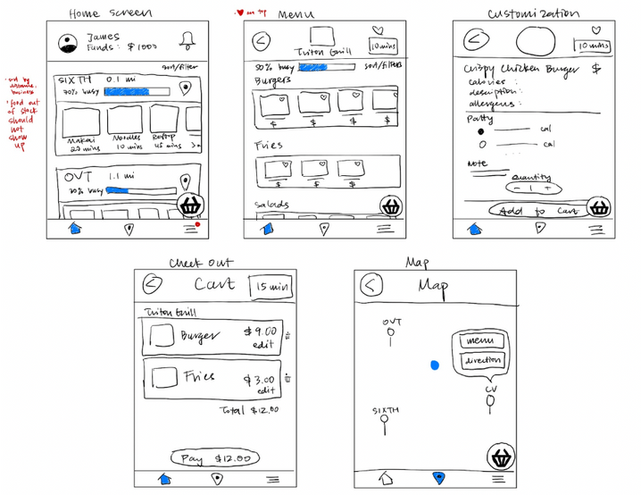

Triton2Go
A simple tool to jot down your thoughts
Overview
Context
Many universities across the United States uses Transact Mobile Ordering app for students to order meals on their smartphones. However, the app's user interface is outdated and unintuitive to use. Through thorough usage of the design process, my team and I collaborated together on a redesign of the mobile ordering app that provides a more appealing, intuitive, and functional user interface.
Timeline
May 2023 - June 2023
My Contributions:
User Research
Problems Analysis
Redesign
Prototyping
Team
Hao Luong
Ada Huynh
Kaci Wong
Arnav Raja
Nhi Tran
Kim Linh Vu
Design Process
Data Collection
Methodology
We conducted the interviews on UC San Diego students on campus at random. The procedure adhered to principles of interview ethics and minimized biased or confounds from internal and external variables.
In our interviews, we had six pre-task questions, then our five tasks, and two post-task questions.
Pre-Task Questions:
Have you ever used the Triton mobile app before?
How many times in a week do you use the Triton mobile app?
Goal:
To gather demographic information and background information on participants familiarity with the app as well as their purposes of using the app.
Task Observations:
Go through the steps of ordering without using the reorder feature
Try to find the location of the restaurant/store where you ordered food from on the app
Show us another non-ordering feature of the app
Goal:
To help judge the efficiency of the current design of the app and see which features are most and least used/noticeable.
Post-Task Questions:
Did the map feature help you understand where the restaurant/store is located?
How would you rate your experience with the app on a scale of 1-10, 1 being least satisfied, and 10 being most satisfied
Do you use the non-ordering features of the app? (rewards, rating, challenges, contests)?
Were there any features that you discovered during the task process that you didn’t know before? (If so, will you use these features in the future?)
Do you look at/utilize the allergen icons for menu items?
Do you look at the wait times for orders? (Do you feel the wait times are accurate?)
Were there any problems that you encountered while processing your order?
Are there any features you wish the app had when ordering food?
Goal:
Gather quantitative data with questions asking participants to rate their experience using the app. Get the master opinions that can help our redesign process. Observe any difficulties and gain insight on which features cause confusion or are useful to their experience. Collect overall opinions without leading questions. Gauge which features can stay and which ones need to be redesigned.
Data Analysis
Problems & Trends
10 out of 25
interviewees discovered the map function only after completing the tasks. 5 interviewees failed to locate and access the map button. The interviewees believe that the restaurant's menu page would provide the location but it did not.
11 out of 25
interviewees found the map difficult to use. The map did not locate the current location of the user. Users must manually locate the campus or their current location.
Moreover, the locations of restaurants on campus were unlabeled pins and did not provide the restaurant's information. Users have to manually tap through each pin in order to determine the names of the restaurants.
7 out of 25
users wished the app had pictures on the menu. Menu items also had vague names or descriptions that did not fit the item.
This correlates to the problem of not knowing portion sizes of the foods. This is because menu items have varyingly different sizes but are not specified clearly.
Old Design Flaws
Lack of Food Photos
Prevents users from visually assessing the food.
Hinders users' ability to make informed decisions of ordering.
More prone to making slips and mistakes by selecting similar-sounding food items.
Redesign:
Pictures afford a clearer representation of the food items, helping users make informed decisions.
Confusing Map Interface
Lacks clear indications of restaurant names.
Difficulty identifying specific locations.
Failure to signify users that tapping on a pin will reveal more information (knowledge-based mistake)
Redesign:
Incorporating useful information under the pins will improve navigational cues.
Inaccurate Wait Time Information
Does not offer the usual waiting times throughout the entire day.
May cause users to experience memory-lapsed slips as different days will have varying wait times.
Hinder users decision-making process since they don’t know the optimal time to order their food.
Redesign:
An estimate of usual wait times throughout the day will afford efficient ordering experience
Absence of Remaining Dining Dollars Balance
Inconvenience for users as they need to place an order without knowing their dining dollars balance or resort to alternative payment methods.
Redesign:
By displaying the remaining amount of dining dollars, the app could afford users knowledge of available funds.
Design Space
Further research on the current mobile ordering apps were conducted and ranked in design space charts. The focus of the designs were on simplicity vs functionality, and order customization vs efficiency.
The re-design targets the ideal experience: simple and functional, customizable and efficient.
Prototyping
Lo-Fi Design

Hi-Fi Design
I was responsible for the entire Hi-Fi Prototype
Home Page
The home page allows the user to quickly evaluate their remaining funds prior to ordering. Users can scroll down to view the different restaurant options, displayed with a photo depicting an what food can be ordered. These restaurants can be sorted based on the user’s preference not just by location proximity. Each restaurant also has a dedicated location button that will take the user to the map page. A search bar makes finding certain restaurants much easier.

Menu Page
The menu page is shown after a user has selected a restaurant. The menu items are separated by types and each have a photo so the user can see the food before getting specific details. There is also a search bar to find certain items and a sorting option. Restaurants can also be "hearted" to be saved as a preference.
Customization Page
The customization page is shown after selecting a food item from a desired restaurant. The different customization selections can be access by a simple scroll down, rather than tapping through multiple pages.
Check Out Page
The check out page is shown after a user has selected all the items they would like to order. The user can easily edit of the quantity of each item, as compared to the original app that would require going through the whole customization process again to add a duplicate item.

Map Page
The map page is shown after clicking on the bottom tab to access it, or through the location icon next to restaurants on the home page. It displays a map of UCSD campus with labeled pins of the restaurants. Each pin are linked to the menu of the restaurant for easy access. Directions can be provided too for the user to navigate.
What the Re-Design Fixed
Problem:
Map is not easy to find and not intuitive to use.
Solution:
The app’s functionality was simplified to 2 main features; ordering and maps.
Eliminated any other unnecessary features like the "Inbox", "Rewards", and "Reorder".
Map button is clearly signified on the bottom of the page.
Constrained the map to only the campus, making it easier for users to identify the restaurants.
Pins will prompt two uses: the menu of the restaurant, and directions to navigate to that restaurant.
Problem:
No images of food.
Solution:
Pages afford pictures of restaurants and photos of the food that can be ordered, signifying to the users the type of food they can order.
Problem:
No remaining funds
Solution:
Implemented a live display of the user’s remaining funds on their dining plan.
Helps the user keep track of their expenses.
By incorporating the feature on top of the ordering page, users can easily identify how much money they have left and can spend it accordingly.
Added feature for users to add funds if they choose to do
Problem:
Too many affordances that did not match the user’s mental model of what a food ordering app should do.
Solution:
Removed features that were not integral to the app’s main purpose, simplify the interface.
Problem:
Lack of customization.
Solution:
Implemented three primary features: a favorites tool, a filter/sorting system, and a note tool.
With the favorites tool, users can simply add a restaurant or a menu order to their favorites which will allow them to easily re-access them again in the favorites tab.
The filter/sorting tool was added to afford users the ability to filter specific restaurants or sort their orders based on their preferences.
Additional notes tool at the end of the ordering page affords the users to personally customize their order however they choose directly to the chef.
Problem:
Too many pages in order customization.
Solution:
Implemented the ability to scroll through different pages, rather than having to tap through them.
Eradicated buttons that would require tapping to go forwards or backwards, which in turn minimized the risk of a capture slip. The finding of Triton2Go having low simplicity and efficiency played a role in redesigning the app in this manner.